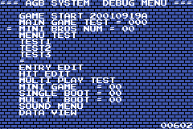

Blender Bros. (USA)
SRAM 256K Save Format Spec gbakit Built-In Debug Menu Patch
Cartridge Identity
- Game Code
ABRE(FamilyABR)- Header Title
BLENDER BROS- Maker / Revision
70/ rev0- ROM Size
- 8.0 MiB (8,388,608 B)
- Save Media
SRAM 256K- SHA-256
5d9a18f14392d823c88de21a73ce7cd57baa5a4fac47c6ab0bad0956d6eb34b4- Engine / SDK Group
comm-010(33 families)
Screenshots
Debug Menu Re-Enablement Patch (.ips)
Download ABRE-debug.ips (15 B IPS / 2 B delta)
- Hook Mechanism
thumb_imm_scene_override· Patch scene dispatcher at 0x080048c2 (ldr r0,[r4] -> movs r0,#44) after boot init to select jump-table index 43 (0x080049a4 -> AGB SYSTEM DEBUG MENU 0x08008fd9)- IPS SHA-256
7f9f0eb62f830bbfb6c69c31aae8da138660dd3dba1fbebca91b7b89d613f01c
gbakit patch apply ABRE-debug.ips original.gba patched-debug.gba

Battery Save Format Specification
Open Full Save Format SpecDownload Sample .sav (32,768 B)Download save-format.json
- Specification Coverage
- 12 mapped fields · 1 verified checksum(s) · Confidence: MEDIUM
- gbakit Built-In Support
- Built-in (ABRE)
- Emulator Verification
- Checksum enforced: No · Repaired save accepted: Yes
gbakit save verify ABRE save.sav
gbakit save decode ABRE save.sav
gbakit save fix ABRE damaged.sav -o repaired.savROM Assets, Compression & Audio
- BIOS Compression
- LZ77 (
0x10): 5 streams · RLE (0x30): 0 streams - ROM Pointer Tables
- 57 tables (0 pointing to validated compressed streams)
- SDK Backup Tags
SRAM_V112
Hardware MMIO Subsystems
ppu_display0x8000c60,0x8001324save_bus_sram_flash0x8005a14